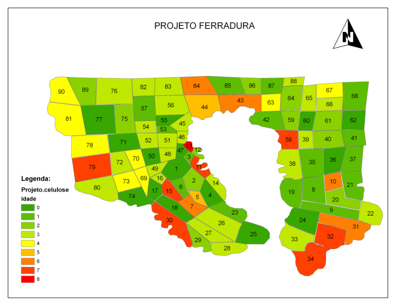
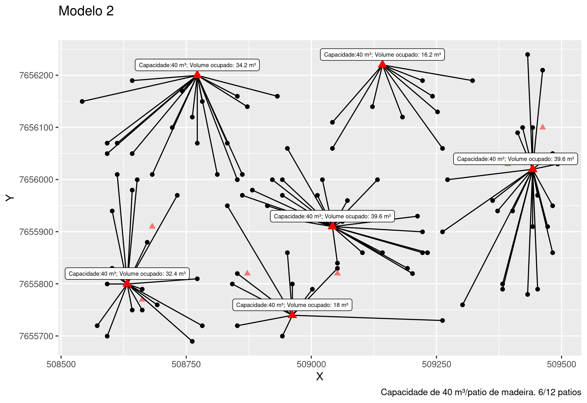

A extração por arraste é uma etapa da colheita florestal onde as toras são transportadas da área de corte até a margem do talhão, estrada ou pátio intermediário.
A distância de extração tem impacto direto nos custos da operação de colheita florestal. Quanto maior a distância entre a área de corte e o pátio de estocagem, maior é o tempo gasto e o consumo de combustível dos equipamentos de arraste, o que eleva os custos operacionais. Além disso, distâncias maiores aumentam o desgaste das máquinas e a necessidade de manutenção, além de prolongarem o ciclo de trabalho, reduzindo a produtividade da equipe.
Otimizar a localização das pilhas de estocagem para minimizar essas distâncias é essencial para uma operação mais econômica e eficiente.
O método da p-mediana é amplamente utilizado em problemas de localização, como a seleção de pátios de estocagem na colheita florestal, em que é necessário escolher p locais que minimizem a distância total (ou custo) entre os pontos de demanda (como áreas de corte) e os pontos de suprimento (como pátios).
O post a seguir é um caderno cujo o intuito foi de desenvolver e explorar novas habilidades envolvendo a utilização de ferramentas de Geoprocessamento e de Programação Linear Inteira aplicado ao problema de otimização da localização de pilhas na colheita florestal. O custo foi calculado a partir da distância euclidiana, com o trânsito das máquinas sobre os tocos na linha de plantio não sendo incluído como restrição.
Esse esforço me permitiu exercitar o aprendizado em modelagem, onde descobri ferramentas de modelagem e solvers de código aberto e livres, que permitem resolver problemas de PL sem nenhum custo. As bibliotecas ROI e OMPR possibilitam padronizar o código dos modelos já que são compatíveis com diferentes solvers, incluindo softwares proprietários. Isso foi ótimo pois não precisei reescrever o modelo para um novo código à depender do solver que estava utilizando. Apliquei o mesmo modelo nos solvers symphony e glpk e tudo funcionou bem.
1) Problema proposto
A área a ser trabalhada pela equipe de planejamento florestal encontra-se localizada no projeto Ferradura, sendo selecionado apenas talhões com idade superior a 3 anos. O mapa a seguir é uma representação da área em análise, que compreende um total de 90 talhões e 4.561 ha com plantio de Eucaliptus spp.
O objetivo é definir a localização e a quantidade de pátios de estocagem necessários para a colheita de um talhão do projeto, tendo em vista o menor custo da operação de extração por arraste.
Restrições
a) Capacidade de armazenamento de madeira por pilha: 200 m³;
b) Distância mínima entre pilhas: 25 m;
c) considere que não há restrições à instalação das pilhas de estocagem de madeira nas bordas do talhão avaliado, e
d) o número de pilhas de estocagem será definido pela razão entre o volume total de madeira do talhão e a capacidade de armazenamento de madeira na pilha, cujo resultado será acrescido de mais uma pilha.
2) Preparando os dados
library(sf)
library(rgdal)
library(spatialEco)
# library(rgeos)
library(tidyr)
library(dplyr)
library(raster)
library(terra)
library(igraph)
library(ggplot2)
Área do projeto.
prj <-
st_read("/home/vinicio/Documentos/PCF-508/PESQUISA OPERACIONAL PCF-508 VINICIO LIMA/P_Mediana/Dados/Projeto.ferradura.shp")
prj$Sitio <- paste0('S', prj$Sitio)
prj <- prj %>% filter(idade > 3)
Idade e sítio.
tabela_1 = data.frame(
Idade = c(4, 5, 6, 7, 8, 9, 10),
S1 = c(250, 300, 348, 394, 439, 483, 526),
S2 = c(200, 240, 278, 316, 352, 387, 421),
S3 = c(180, 216, 251, 284, 316, 348, 379)
)
tabela_1 = tabela_1 %>% pivot_longer(
cols = c('S1', 'S2', 'S3'),
names_to = 'Sitio',
values_to = "Volume"
)
Quantidade de pilhas por talhão.
prj_c <- left_join(prj, tabela_1, by = c("Sitio" = "Sitio", "idade" = "Idade")) %>%
mutate(n_pilhas = round((Volume * area / 200) + 1))
prj_c[1:4,] # prj_c = projeto colheita
## Simple feature collection with 4 features and 7 fields
## Geometry type: POLYGON
## Dimension: XY
## Bounding box: xmin: 503495 ymin: 7651331 xmax: 509493.7 ymax: 7653584
## Projected CRS: SAD69 / UTM zone 23S
## Id area idade Talhao Sitio Volume geometry n_pilhas
## 1 0 19 5 5 S3 216 POLYGON ((503841.5 7652307,... 22
## 2 0 39 6 7 S3 251 POLYGON ((503929.5 7652152,... 50
## 3 0 36 6 10 S3 251 POLYGON ((508861 7652259, 5... 46
## 4 0 27 7 11 S1 394 POLYGON ((503919.5 7653290,... 54
Selecionar um talhão.
# prj_t = prj_c %>% sample_n(1)
prj_t = prj_c %>% filter(Talhao == 67) # prj_t = talhao selecionado
prj_t %>% st_drop_geometry()
## Id area idade Talhao Sitio Volume n_pilhas
## 1 0 50 4 67 S3 180 46
Definindo a área que uma pilha vai ocupar no talhão (25m x 25m).
Alocando as pilhas de madeira na borda do talhão.
r <- rast(ext(prj_t), res = 10)
rast <- rasterize(vect(prj_t), r, values=1, background=0)
r2 = raster(rast)
crs(r2) <- "+proj=utm +zone=23 +south +ellps=aust_SA +units=m +no_defs"
perimetro <- prj_t %>% st_cast(to = "LINESTRING")
r3 <- rast(ext(prj_t),
nrow = 23,
ncol = 39,
res = 25)
per <- raster(rasterize(
vect(perimetro),
r3,
values = 1,
background = 0,
touches = TRUE
))
tbl_per = rasterToPolygons(
per,
fun = NULL,
n = 4,
na.rm = TRUE,
digits = 12,
dissolve = FALSE
) %>% st_as_sf()
# filtra somente bordadura
tbl_1 = tbl_per %>% filter(layer == 1)
st_crs(tbl_1) <- "+proj=utm +zone=23 +south +ellps=aust_SA +units=m +no_defs"
Garantindo a distância de 25m entre pilhas.
my_graph <- graph_from_adj_list(st_touches(tbl_1)) # input perimetro grid 25x25
id_to_be_ignored <- ego(my_graph, order = 1, nodes = 1)[[1]]
all_second_order_neighbours <- ego(my_graph, order = 2, nodes = 1)[[1]]
final_sample <- difference(all_second_order_neighbours, id_to_be_ignored)
i <- 1
while (TRUE) {
if (i > length(final_sample)) break
id <- final_sample[[i]]
ego1_id <- ego(my_graph, order = 1, nodes = id)[[1]]
id_to_be_ignored <- union(id_to_be_ignored, difference(ego1_id, V(my_graph)[id]))
ego2_id <- difference(ego(my_graph, order = 2, nodes = id)[[1]], ego1_id )
final_sample <- difference(union(final_sample, ego2_id), id_to_be_ignored)
i <- i + 1
}
pilhas = tbl_1[c(1, as.integer(final_sample)), ]
Parcelas do talhão (Grid 10m x 10m).
r.grid <- rast(ext(prj_t), res = 10)
tal <- raster(rasterize(vect(prj_t), r.grid, values=1, background=0, touches = FALSE))
tal_mask = mask(tal, prj_t)
tal_mask[!is.na(tal_mask)][] <- 0
x = rasterToPolygons(
tal_mask, fun = NULL, n = 4, na.rm = TRUE, digits = 12, dissolve = FALSE
) %>% st_as_sf()
st_crs(x) <- "+proj=utm +zone=23 +south +ellps=aust_SA +units=m +no_defs"
Distribuição das pilhas no talhão selecionado.
pilhas_point = st_centroid(pilhas)
x_point = st_centroid(x)
plot(st_geometry(st_centroid(x_point)),
pch = 3, col = 'black', cex = 2. , axes = TRUE,
main = "Distribuição das pilhas no talhão (T67)",
sub = ""
)
plot(st_geometry(pilhas_point),pch = 24, cex = 1.5, col = "blue",
bg = "red", lwd = 1 ,
add = TRUE
)

3) Reduzindo o problema
Exemplo simplificado para abstração do problema a partir de um subset dos dados originais. O objetivo é testar e validar a funcionalidade do modelo em uma escala menor.
Amostragem aleatória
Problema reduzido contendo 100 parcelas e 12 pátios de estocagem.
rownames(x_point) <- as.integer(row.names(x_point))
x_point$point_name <- as.integer(row.names(x_point))
grids = subsample.distance(
as(x_point, "Spatial"), # SpatialEco agora recebe objeto sf
x_point,
size = 100, d = 10) # %>% st_as_sf() # 100 parcelas
pil = subsample.distance(
as(st_crop( x_point, st_bbox(grids)), "Spatial"), # SpatialEco agora recebe objeto sf
st_crop( x_point, st_bbox(grids)),
size = 12, d = 25) # %>% st_as_sf() # 12 pátios
plot(st_geometry(st_centroid(grids)), pch = 3, col = 'black', cex= 2. , axes = TRUE,
main = "Exemplo hipotético para modelagem do problema")
plot(st_geometry(pil), pch = 24, cex=3, col="blue", bg="red", lwd=2, add = TRUE )

4) Matriz de custo
Distância euclidiana entre as parcelas (grids) e os pátios.
# Obsoleto - rgeos
# cost = rgeos::gDistance(as(pil, "Spatial"),
# as(grids, "Spatial") , byid = TRUE)
cost = st_distance(pil, grids)
cost[1:3,1:1 ] %>% t() # Exemplo da saída da matriz de custo
## Units: [m]
## [,1] [,2] [,3]
## [1,] 290.6888 661.211 143.1782
Tabelas para plotagem
grids$id <- 1:nrow(grids)
grids$id_grid <- grids$id
grids$grids_name <- rownames(grids)
XY.grids <- st_coordinates(grids)
grids <- grids %>% mutate(X_g = XY.grids[, 1],
Y_g = XY.grids[,2] )
grids <- cbind(grids, XY.grids) %>% st_drop_geometry()
pil$id <- 1:nrow(pil)
pil$id_pil <- pil$id
pil$pil_name <- rownames(pil)
XY.pil <- st_coordinates(pil)
pil <- pil %>% mutate(X_p = XY.pil[, 1],
Y_p = XY.pil[,2] )
pil <- cbind(pil, XY.pil) %>% st_drop_geometry()
5) Ferramentas de modelagem e Solvers
OMPR
OMPR (Optimization Modeling Package) é uma DSL para modelar e resolver programas lineares inteiros mistos. É inspirado no projeto Jump em Julia. (Fonte: https://dirkschumacher.github.io/ompr/)
library(ompr)
ROI
O pacote R Optimization Infrastructure (ROI) fornece uma infraestrutura extensível para modelar problemas de otimização linear, quadrática, cônica e geral de maneira consistente. (Fonte: https://roi.r-forge.r-project.org/index.html)
library(ROI)
library(ompr.roi)
O ROI fornece os recursos de modelagem e gerencia os plug-ins. Os plug-ins adicionam os solucionadores ao ROI. Entre os solvers disponíveis estão Gurobi, LPSolve, Symphony e glpk.
plugins <- ROI_available_solvers()[,c("Package", "Repository")]
plugins <- aggregate(Repository ~ Package, data = plugins,
FUN = paste, collapse = ", ")
knitr::kable(plugins, row.names = TRUE)
Symphony
O SYMPHONY é um solver MILP genérico de código aberto, de estrutura extensível para implementação de solucionadores personalizados para programação linear inteira mista (MILPs). (Fonte: https://github.com/coin-or/SYMPHONY)
library(ROI.plugin.symphony)
Modelo 1 - Custo fixo
Atribiu uma parcela para cada pátio. Não leva em consideração a diferença de custo para ativar os pátios.
num_depots = nrow(pil)
num_cust = nrow(grids)
custo.fixo = 10 # arbitrário pra todos os pátios # Custo para ativar um pátio #
volume.t = prj_t$area * prj_t$Volume
demanda <- volume.t/((prj_t$area)/(res(r.grid)[1]^2/10000))
capacidade <- 40 # arbitrário # Capacidade do pátio de estocagem
cost <- matrix(cost, num_depots, num_cust )
demand = rep(demanda, nrow(grids))
fixedcost = rep(custo.fixo, nrow(pil))
capacity = rep(capacidade, nrow(pil))
m <- MIPModel() %>%
add_variable(ship[i, j],
i = 1:num_depots,
j = 1:num_cust,
type = "binary") %>%
add_constraint(sum_expr(demand[j] * ship[i, j], j = 1:num_cust) <= capacity[i],
i = 1:num_depots) %>%
add_constraint(sum_expr(ship[i, j], i = 1:num_depots) == 1, j = 1:num_cust) %>%
set_objective(sum_expr(cost[i, j] * ship[i, j], i = 1:num_depots, j =
1:num_cust), "min") %>%
solve_model(with_ROI(solver = "symphony", verbosity = 1))
cat("Status:",solver_status(m),"\n")
cat("Objective:",objective_value(m),"\n")
matchs <- get_solution(m,ship[i, j]) %>%
filter(value > 0) %>% as.data.frame()
p <- ggplot(grids, aes( X , Y)) +
geom_point() +
geom_point(data = pil, color = "red", alpha = 0.5, shape = 17, size= 2)
plot_assignment = matchs %>%
inner_join(grids, by = c("j" = "id")) %>%
inner_join(pil, by = c("i" = "id"))
grids_count <- plot_assignment %>% group_by(pil_name) %>% summarise(n = n())
grids_count # Total de atribuições
plot_pilhas<- pil %>%
mutate(costs = capacity) %>%
inner_join(grids_count, by = "pil_name") %>%
filter(id %in% unique(matchs$i)) %>% mutate(total = n*demanda)
P_mod1 <- p +
geom_segment(data = plot_assignment,
aes(
x = X.y,
y = Y.y,
xend = X.x,
yend = Y.x
),
lwd = .2) +
geom_point(
data = plot_pilhas,
color = "red",
size = 2,
shape = 17
) +
ggrepel::geom_label_repel(
data = plot_pilhas,
aes(
label = paste0("Capacidade:", costs, " m³", "; Volume ocupado: ", total, " m³")
),
size = 1.5,
nudge_y = 20
) +
labs(title = "Modelo 1",
subtitle = "Não considera nenhuma restrição de custo para ativação de um determinado pátio.
\n Todos os pátios serão acionados.")
ggplot2::ggsave("./plot/P_mod_1.png", P_mod1, width = 8, height = 5.5, device = "png")
Modelo 2 - Custo variável
Insere a restrição de custo para ativação de um determinado pátio/pilha.
Na prática força o modelo a ativar os pátios de menor custo e que correspondem ao menor custo total.
# Custo para ativação dos pátios.
v_cost = c(10, 800, 50000, 1000, 300, 3000, 500, 2000, 600, 10, 400, 10) # Variável
m2 <- MIPModel() %>%
add_variable(ship[i, j],
i = 1:num_depots,
j = 1:num_cust,
type = "binary") %>%
add_variable(y[i], i = 1:num_depots, type = "binary") %>%
add_constraint(sum_expr(demand[j] * ship[i, j], j = 1:num_cust) <= capacity[i],
i = 1:num_depots) %>%
add_constraint(sum_expr(ship[i, j], i = 1:num_depots) == 1, j = 1:num_cust) %>%
set_objective(
sum_expr(cost[i, j] * ship[i, j], i = 1:num_depots, j = 1:num_cust) +
sum_over(v_cost[i] * y[i], i = 1:num_depots),
"min"
) %>%
add_constraint(ship[i, j] <= y[i], i = 1:num_depots, j = 1:num_cust) %>%
solve_model(with_ROI(solver = "symphony", verbosity = 1))
cat("Status:", solver_status(m2), "\n")
# Status: success
cat("Objective:", objective_value(m2), "\n")
# Objective: 14454
matchs <- get_solution(m2, ship[i, j]) %>%
filter(value > 0) %>% as.data.frame()
plot_assignment = matchs %>%
inner_join(grids, by = c("j" = "id")) %>%
inner_join(pil, by = c("i" = "id"))
grids_count <-
plot_assignment %>% group_by(pil_name) %>% summarise(n = n())
Total de atribuições Modelo 2
grids_count
A tibble: 6 × 2
pil_name n
<chr> <int>
1 1557 18
2 2837 14
3 3450 22
4 4459 12
5 542 17
6 755 17
plot_pilhas <- pil %>%
mutate(costs = capacity) %>%
inner_join(grids_count, by = "pil_name") %>%
filter(id %in% unique(matchs$i)) %>% mutate(total = n * demanda)
p2a = p +
geom_segment(data = plot_assignment, aes(
x = X.y,
y = Y.y,
xend = X.x,
yend = Y.x
)) +
geom_point(
data = plot_pilhas,
color = "red",
size = 3,
shape = 17
) +
ggrepel::geom_label_repel(
data = plot_pilhas,
aes(
label = paste0("Capacidade:", costs, " m³", "; Volume ocupado: ", total, " m³")
),
size = 2,
nudge_y = 20
) +
labs(title = "Modelo 2",
subtitle = "")
#p2a
ggplot2::ggsave(
filename = "./plot/plot_Mod_2.png",
plot = p2a,
width = 8,
height = 5.5,
device = "png"
)
Em vermelho claro os pátios que não foram acionados em função do maior custo para ativação. Na prática esse modelo pode representar situações onde a região disponível para alocação de um pátio ou pilha de madeira pretende ser evitada. Por exemplo, maior custo para adequação de estradas, locais de maior risco para operação ou evitar o impacto em locais próximos a ambientes sensíveis (áreas de preservação).
Modelo 2.1
Altera a capacidade para 80 m³ por pátio de madeira afim de comparar a sensibilidade do modelo para definir a ativação dos pátios em função da capacidade e custo.
capacidade <- 80 # Capacidade do pátio de estocagem
capacity = rep(capacidade, nrow(pil))
cost <- matrix(cost/1000, num_depots, num_cust ) # custo em km
m2b <- MIPModel() %>%
add_variable(ship[i, j],
i = 1:num_depots,
j = 1:num_cust,
type = "binary") %>%
add_variable(y[i], i = 1:num_depots, type = "binary") %>%
add_constraint(sum_expr(demand[j] * ship[i, j], j = 1:num_cust) <= capacity[i],
i = 1:num_depots) %>%
add_constraint(sum_expr(ship[i, j], i = 1:num_depots) == 1, j = 1:num_cust) %>%
set_objective(
sum_expr(cost[i, j] * ship[i, j], i = 1:num_depots, j = 1:num_cust) +
sum_over(v_cost[i] * y[i], i = 1:num_depots),
"min"
) %>%
add_constraint(ship[i, j] <= y[i], i = 1:num_depots, j = 1:num_cust) %>%
solve_model(with_ROI(solver = "symphony", verbosity = 1))
cat("Status:",solver_status(m2b),"\n")
# Status: success
cat("Objective:",objective_value(m2b),"\n")
# Objective: 54.003
matchs <- get_solution(m2b,ship[i, j]) %>%
filter(value > 0) %>% as.data.frame()
plot_assignment = matchs %>%
inner_join(grids, by = c("j" = "id")) %>%
inner_join(pil, by = c("i" = "id"))
grids_count <- plot_assignment %>% group_by(pil_name) %>% summarise(n = n())
Total de atribuições do modelo (2.1)
grids_count
A tibble: 3 × 2
pil_name n
<chr> <int>
1 33
10 31
12 36
plot_pilhas<- pil %>%
mutate(costs = capacity) %>%
inner_join(grids_count, by = "pil_name") %>%
filter(id %in% unique(matchs$i)) %>% mutate(total = n*demanda)
p2b = p +
geom_segment(data = plot_assignment, aes(
x = X.y,
y = Y.y,
xend = X.x,
yend = Y.x
)) +
geom_point(
data = plot_pilhas,
color = "red",
size = 3,
shape = 17
) +
ggrepel::geom_label_repel(
data = plot_pilhas,
aes(
label = paste0("Capacidade:", costs, " m³", "; Volume ocupado: ", total, " m³")
),
size = 2,
nudge_y = 20
) +
labs(title = "Modelo 2.1",
subtitle = "",
caption = "Capacidade de 80 m³/pilha. 3/12 pilhas")
ggplot2::ggsave(
filename = "./plot/plot_Mod_2B.png",
plot = p2b,
width = 8,
height = 5.5,
device = "png"
)
library(cowplot)
png_plot_p2a <- cowplot::ggdraw() + cowplot::draw_image("./plot/plot_Mod_2A.png", scale = 0.9)
png_plot_p2b <- cowplot::ggdraw() + cowplot::draw_image("./plot/plot_Mod_2B.png", scale = 0.9)
grid_MOD_2AB <- cowplot::plot_grid(png_plot_p2a ,png_plot_p2b , labels = "", nrow=2)
ggsave(filename = "./plot/plot_Mod_2AB.png",
plot = grid_MOD_2AB, width = 7.5, height = 10, device = "png")

Modelo 3 P-Mediana
Adiciona a restrição de quantidade de pátios que serão ativados, valor de P. Testando o modelo para 5 pátios.
capacidade <- 50 # Capacidade das pilhas de estocagem em m³
capacity = rep(capacidade, nrow(pil))
cost <- matrix(cost, num_depots, num_cust) # matriz de custo - dist.
m3 <- MIPModel() %>%
add_variable(ship[i, j],
i = 1:num_depots,
j = 1:num_cust,
type = "binary") %>%
add_variable(y[i], i = 1:num_depots, type = "binary") %>%
add_constraint(sum_expr(demand[j] * ship[i, j], j = 1:num_cust) <= capacity[i],
i = 1:num_depots) %>%
add_constraint(sum_expr(ship[i, j], i = 1:num_depots) == 1, j = 1:num_cust) %>%
set_objective(
sum_expr(cost[i, j] * ship[i, j], i = 1:num_depots, j = 1:num_cust) +
sum_over(v_cost[i] * y[i], i = 1:num_depots),
"min"
) %>%
add_constraint(ship[i, j] <= y[i], i = 1:num_depots, j = 1:num_cust) %>%
add_constraint(sum_expr(y[i], i = 1:num_depots) <= 5) %>% # Valor de P
solve_model(with_ROI(solver = "symphony", verbosity = 1))
cat("Status:",solver_status(m3),"\n")
cat("Objective:", objective_value(m3),"\n")
matchs_m3 <- get_solution(m3,ship[i, j]) %>%
filter(value > 0) %>% as.data.frame()
plot_assignment_m3 = matchs_m3 %>%
inner_join(grids, by = c("j" = "id")) %>%
inner_join(pil, by = c("i" = "id"))
grids_count_m3 <- plot_assignment_m3 %>% group_by(pil_name) %>% summarise(n = n())
Total de atribuições Modelo 3
grids_count_m3
A tibble: 5 × 2
pil_name n
<chr> <int>
10 16
2 17
4 27
7 26
8 14
plot_pilhas_m3 <- pil %>%
mutate(costs = capacity) %>%
inner_join(grids_count_m3, by = "pil_name") %>%
filter(id %in% unique(matchs_m3$i)) %>% mutate(total = n*demanda)
p_m3 <- p +
geom_segment(data = plot_assignment_m3, aes(
x = X.y,
y = Y.y,
xend = X.x,
yend = Y.x
)) +
geom_point(
data = plot_pilhas_m3,
color = "red",
size = 3,
shape = 17
) +
ggrepel::geom_label_repel(
data = plot_pilhas_m3,
aes(
label = paste0("Capacidade:", costs, " m³", "; Volume ocupado: ", total, " m³")
),
size = 2,
nudge_y = 20
) +
labs(title = "Modelo 3 ",
subtitle = "P = 5")
ggsave(filename = "./plot/plot_Mod_3.png",
plot = p_m3,
width = 7.5,
height = 10,
device = "png"
)
6) Retorna ao problema original
Após validar o comportamento dos modelos podemos aplicar o modelo da p-mediana para minimizar o custo da extração por arraste no talhão 67 do projeto Ferradura.
O talhão foi dividido em parcelas (grids) de 10m x 10m e um total de 55 pilhas distribuídas nas bordas do talhão, com a distância mínima de 25m entre as pilhas (item 2 - Preparando os dados).
A quantidade de pilhas estipulada pela área de planejamento foi de 46 + 1 pilha.
grids = x_point
pil = pilhas_point
# rgeos - obsoleto
# cost = rgeos::gDistance(as(pil, "Spatial"), as(grids, "Spatial") , byid = TRUE)
# cost <- cost %>% t() %>% as.vector() %>% round()
cost = st_distance(pil, grids)
cost <- cost %>% as.vector() %>% round()
num_depots = nrow(pil)
num_cust = nrow(grids)
custo.fixo = 10 # Custo para ativar um pátio
volume.t = prj_t$area * prj_t$Volume
demanda <- volume.t/((prj_t$area)/(res(r.grid)[1]^2/10000))# Demanda em m³ de uma parcela
capacidade <- 200 # Capacidade dos pátios de estocagem original do problema
cost <- matrix(cost, num_depots, num_cust )
demand = rep(demanda, nrow(grids))
fixedcost = rep(custo.fixo, nrow(pil))
capacity = rep(capacidade, nrow(pil))
p = prj_t$n_pilhas + 1 # restrição (d) do problema
Modelo
# Função
pmediana <- function(){
solucao <- MIPModel() %>%
add_variable(ship[i, j],
i = 1:num_depots,
j = 1:num_cust,
type = "binary") %>%
add_variable(y[i], i = 1:num_depots, type = "binary") %>%
add_constraint(sum_expr(demand[j] * ship[i, j], j = 1:num_cust) <= capacity[i],
i = 1:num_depots) %>%
add_constraint(sum_expr(ship[i, j], i = 1:num_depots) == 1, j = 1:num_cust) %>%
set_objective(
sum_expr(cost[i, j] * ship[i, j], i = 1:num_depots, j = 1:num_cust) +
sum_over(fixedcost[i] * y[i], i = 1:num_depots),
"min"
) %>%
add_constraint(ship[i, j] <= y[i], i = 1:num_depots, j = 1:num_cust) %>%
add_constraint(sum_expr(y[i], i = 1:num_depots) <= p) %>%
solve_model(with_ROI(
solver = "symphony",
verbosity = 1,
first_feasible = TRUE
))
return(solucao)
}
# Aplica
start.time <- Sys.time()
m_pvalue <- pmediana()
end.time <- Sys.time()
time.taken <- end.time - start.time
time.taken
Infelizmente o tempo de processamento foi muito longo….. :/
A saída encontrada foi reduzir a quantidade de parcelas e o número de pilhas para obter uma solução em um tempo menor.
# Grids
r.grid <- rast(ext(prj_t), res = 50)
tal <- raster(rasterize(vect(prj_t), r.grid, values=1, background=0, touches = FALSE))
tal_mask = mask(tal, prj_t)
tal_mask[!is.na(tal_mask)][] <- 0
x = rasterToPolygons(
tal_mask,
fun = NULL,
n = 4,
na.rm = TRUE,
digits = 12,
dissolve = FALSE
) %>% st_as_sf()
st_crs(x) <- "+proj=utm +zone=23 +south +ellps=aust_SA +units=m +no_defs"
x_point = st_centroid(x)
grids <- x_point
# Pilhas
pil = pilhas_point
pil = subsample.distance(
# as(pil, "Spatial"), # SpatialEco agora recebe objeto sf
pil,
size = 23, d = 100) %>% st_as_sf() # 23 pilhas
# Plot
plot(st_geometry(st_centroid(grids)), pch = 3, col = 'black', cex= 2, axes = TRUE,
main = "196 Parcelas e 23 pilhas")
plot(st_geometry(pil), pch = 24, cex=3, col="blue", bg="red", lwd=2, add = TRUE )

Dado o novo cenário considerei a capacidade de 750 m³ por pilha e que a decisão tomada pela equipe de planejamento florestal foi de ativar 15 das 23 pilhas possíveis (valor de P = 15).
# Matiz de Custo
# rggeos - Obsoleto
# cost = rgeos::gDistance(as(pil, "Spatial"), as(grids, "Spatial") , byid = TRUE)
# cost <- cost %>% t() %>% as.vector() %>% round()
cost = st_distance(pil, grids)
cost <- cost %>% as.vector() %>% round()
# Restrições
num_depots = nrow(pil)
num_cust = nrow(grids)
custo.fixo = 10 # Custo para ativar um pátio
volume.t = prj_t$area * prj_t$Volume
demanda <- volume.t/((prj_t$area)/(res(r.grid)[1]^2/10000)) # Demanda em m³ de uma parcela
capacidade <- 750 # considera um total de 15 pilhas
cost <- matrix(cost, num_depots, num_cust )
demand = rep(demanda, nrow(grids))
fixedcost = rep(custo.fixo, nrow(pil))
capacity = rep(capacidade, nrow(pil))
#p = prj_t$n_pilhas
p = 15 # Valor P
# Solução
start.time <- Sys.time()
m_pvalue <- pmediana()
end.time <- Sys.time()
time.taken <- end.time - start.time
# cat("Status:",solver_status(m_pvalue),"\n")
# cat("Objective:",objective_value(m_pvalue),"\n")
Cria o mapa da solução
matchs <- get_solution(m_pvalue,ship[i, j]) %>%
filter(value > 0) %>% as.data.frame()
grids$id <- 1:nrow(grids)
grids$id_grid <- grids$id
grids$grids_name <- rownames(grids)
XY.grids <- st_coordinates(grids)
grids <- grids %>% mutate(X_g = XY.grids[, 1],
Y_g = XY.grids[,2] )
grids <- cbind(grids, XY.grids) %>% st_drop_geometry()
pil$id <- 1:nrow(pil)
pil$id_pil <- pil$id
pil$pil_name <- rownames(pil)
XY.pil<- st_coordinates(pil)
pil <- pil %>% mutate(X_p = XY.pil[, 1],
Y_p = XY.pil[,2] )
pil <- cbind(pil, XY.pil) %>% st_drop_geometry()
plot_assignment = matchs %>%
inner_join(grids, by = c("j" = "id")) %>%
inner_join(pil, by = c("i" = "id"))
grids_count <- plot_assignment %>% group_by(pil_name) %>% summarise(n = n())
grids_count # Total de atribuições
plot_pilhas <- pil %>%
mutate(costs = capacity) %>%
inner_join(grids_count, by = "pil_name") %>%
filter(id %in% unique(matchs$i)) %>% mutate(total = n*demanda)
plot_pilhas = st_as_sf(x=plot_pilhas,
coords = c("X_p", "Y_p"),
crs= "+proj=utm +zone=23 +south +ellps=aust_SA +units=m +no_defs")
p_point = st_as_sf(x=plot_assignment,
coords = c("X_g", "Y_g"),
crs= "+proj=utm +zone=23 +south +ellps=aust_SA +units=m +no_defs")
r_tal <- raster::raster(rasterize(vect(st_buffer(p_point, 2)), r.grid, field = "pil_name",
fun=max, background=NA, touches = FALSE))
r_tal = mask(r_tal, prj_t)
raster_df <- rasterToPoints(r_tal, spatial = TRUE)
tal_spdf <- as(raster_df, 'SpatialPixelsDataFrame')
tal_df <- as.data.frame(tal_spdf)
colnames(tal_df) <- c("value", "x", "y")
Plot
library(ggthemes)
tal_67 =
ggplot() +
geom_tile(data=tal_df, aes(x=x, y=y, fill= value), alpha=0.8) +
geom_sf() +
geom_sf(data = plot_pilhas, color = "red", shape = 17, size= 5) +
ggrepel::geom_label_repel(data = plot_pilhas,
aes(x=X, y=Y, label= paste0(
" Volume ocupado: ", total, " m³")),
size = 2, nudge_y = 24)+
coord_sf(xlim = c(st_bbox(plot_pilhas)[1] , st_bbox(plot_pilhas)[3]),
ylim = c(st_bbox(plot_pilhas)[2], st_bbox(plot_pilhas)[4] ), expand = TRUE) +
scale_fill_gradientn(colours = c("white", "black"), values = c(0, 1)) +
theme(panel.grid = element_blank())+
theme_bw()+
theme(legend.position="none",
axis.text.y = element_text(angle = 90, vjust = 0.5, hjust=1),
axis.text = element_text(size = 5.5),
) +
labs(title = "Mapa de localização das pilhas ",
subtitle = "P = 15",
caption = "Mapa de localização da solução ótima encontrada para minimização do custo de extração por
arraste usando o modelo da p-mediana. Atribui cada parcela do talhão para a pilha de menor distância
a ser percorrida pela máquina, considerando p locais disponíveis para a instalação dos pátios.
Solver: Symphony") +
theme(
plot.title = element_text(size = 11, face = "bold"), # Controle do título
plot.subtitle = element_text(size = 8, face = "italic"), # Controle do subtítulo
plot.caption = element_text(size = 5.5, face = "plain") # Controle da fonte
)
ggsave(
plot = tal_67,
filename = "./plot/p_mediana_T67.png",
width = 20,
height = 15,
units = "cm",
device = "png"
)
Relatório do solver
Starting Preprocessing...
Preprocessing finished...
with no modifications...
Problem has
4728 constraints
4531 variables
18055 nonzero coefficients
Total Presolve Time: 0.051709...
Solving...
granularity set at 1.000000
solving root lp relaxation
The LP value is: 23942.000 [0,377]
****** Found Better Feasible Solution !
****** Cost: 23942.000000
****************************************************
* Stopping After Finding First Feasible Solution *
* Now displaying stats and best solution found... *
****************************************************
======================= CP Timing ===========================
Cut Pool 0.000
====================== LP/CG Timing =========================
LP Solution Time 0.019
LP Setup Time 0.001
Variable Fixing 0.000
Pricing 0.000
Strong Branching 0.000
Separation 0.000
Primal Heuristics 0.000
Communication 0.000
=================== Parallel Overhead ======================
Communication 0.000
Ramp Up Time (TM) 0.053
Ramp Down Time 0.000
Total User Time 0.019
Total Wallclock Time 0.074
====================== Statistics =========================
Number of created nodes : 1
Number of analyzed nodes: 1
Depth of tree: 0
Size of the tree: 1
Number of solutions found: 1
Number of solutions in pool: 1
Number of Chains: 1
Number of Diving Halts: 0
Number of cuts in cut pool: 0
Lower Bound in Root: 23942.000
======================= LP Solver =========================
Number of times LP solver called: 1
Number of calls from feasibility pump: 0
Number of calls from strong branching: 0
Number of solutions found by LP solve: 1
Number of bounds changed by strong branching: 0
Number of nodes pruned by strong branching: 0
Number of bounds changed by branching presolver: 0
Number of nodes pruned by branching presolver: 0
==================== Primal Heuristics ====================
Time #Called #Solutions
Rounding I 0.00
Rounding II 0.00
Diving 0.00
Feasibility Pump 0.00
Local Search 0.01 1 0
Restricted Search 0.00
Rins Search 0.00
Local Branching 0.00
=========================== Cuts ==========================
Accepted: 0
Added to LPs: 0
Deleted from LPs: 0
Removed because of bad coeffs: 0
Removed because of duplicacy: 0
Insufficiently violated: 0
In root: 0
Time in cut generation: 0.00
Time in checking quality and adding: 0.00
Time #Called In Root Total
Gomory 0.00
Knapsack 0.00
Clique 0.00
Probing 0.00
Flowcover 0.00
Twomir 0.00
Oddhole 0.00
Mir 0.00
Rounding 0.00
LandP-I 0.00
LandP-II 0.00
Redsplit 0.00
===========================================================
Solution Found: Node 0, Level 0
Solution Cost: 23942.0000000000
# Ambiente de execução
info = sessionInfo()
info
## R version 4.4.1 (2024-06-14)
## Platform: x86_64-pc-linux-gnu
## Running under: Ubuntu 20.04.6 LTS
##
## Matrix products: default
## BLAS: /usr/lib/x86_64-linux-gnu/blas/libblas.so.3.9.0
## LAPACK: /usr/lib/x86_64-linux-gnu/lapack/liblapack.so.3.9.0
##
## locale:
## [1] LC_CTYPE=pt_BR.UTF-8 LC_NUMERIC=C
## [3] LC_TIME=pt_BR.UTF-8 LC_COLLATE=pt_BR.UTF-8
## [5] LC_MONETARY=pt_BR.UTF-8 LC_MESSAGES=pt_BR.UTF-8
## [7] LC_PAPER=pt_BR.UTF-8 LC_NAME=C
## [9] LC_ADDRESS=C LC_TELEPHONE=C
## [11] LC_MEASUREMENT=pt_BR.UTF-8 LC_IDENTIFICATION=C
##
## time zone: America/Sao_Paulo
## tzcode source: system (glibc)
##
## attached base packages:
## [1] stats graphics grDevices utils datasets methods base
##
## other attached packages:
## [1] ROI.plugin.symphony_1.0-0 ompr.roi_1.0.2
## [3] ROI_1.0-1 ompr_1.0.4
## [5] ggplot2_3.5.1 igraph_2.0.3
## [7] terra_1.7-78 raster_3.6-26
## [9] dplyr_1.1.4 tidyr_1.3.1
## [11] spatialEco_2.0-2 rgdal_1.6-7
## [13] sp_2.1-4 sf_1.0-16
##
## loaded via a namespace (and not attached):
## [1] gtable_0.3.5 xfun_0.43 bslib_0.7.0 lattice_0.22-5
## [5] vctrs_0.6.5 tools_4.4.1 generics_0.1.3 tibble_3.2.1
## [9] proxy_0.4-27 fansi_1.0.6 highr_0.10 pkgconfig_2.0.3
## [13] Matrix_1.6-5 KernSmooth_2.23-24 data.table_1.15.4 checkmate_2.3.2
## [17] listcomp_0.4.1 lifecycle_1.0.4 compiler_4.4.1 munsell_0.5.1
## [21] codetools_0.2-19 htmltools_0.5.8.1 class_7.3-22 sass_0.4.9
## [25] yaml_2.3.8 lazyeval_0.2.2 pillar_1.9.0 jquerylib_0.1.4
## [29] classInt_0.4-10 cachem_1.0.8 tidyselect_1.2.1 digest_0.6.35
## [33] slam_0.1-54 purrr_1.0.2 bookdown_0.39 fastmap_1.1.1
## [37] grid_4.4.1 colorspace_2.1-0 cli_3.6.2 magrittr_2.0.3
## [41] utf8_1.2.4 e1071_1.7-14 withr_3.0.0 scales_1.3.0
## [45] backports_1.4.1 Rsymphony_0.1-33 registry_0.5-1 rmarkdown_2.26
## [49] blogdown_1.19 evaluate_0.23 knitr_1.46 rlang_1.1.3
## [53] Rcpp_1.0.12 glue_1.7.0 DBI_1.2.2 rstudioapi_0.16.0
## [57] jsonlite_1.8.8 R6_2.5.1 units_0.8-5
rmarkdown::render('pmediana_vinicio.R',
output_format = c("html_document", "pdf_document"))